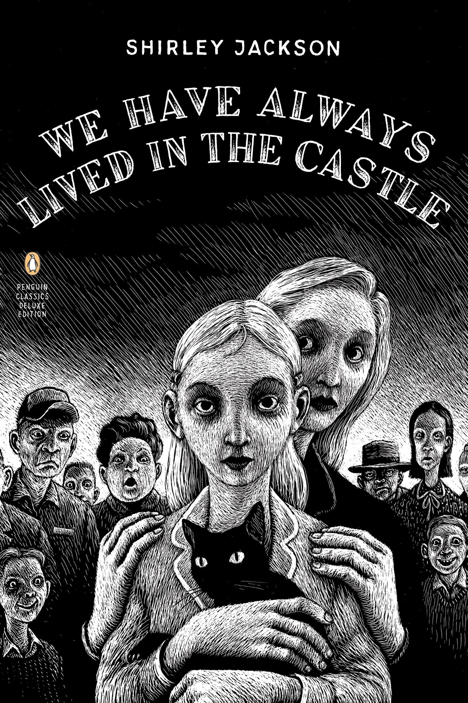

My Name is Mary Katherine Blackwood. I am eighteen years old, and I live with my sister Constance. I have often thought that with any luck at all I could have been born a werewolf, because the two middle fingers on both my hands are the same length, but I have had to be content with what I had. I dislike washing myself, and dogs, and noise. I like my sister Constance, and Richard Plantagenet, and Amantia phalloides, the deathcup mushroom... Everyone else in my family is dead.
Born in 1944 to the wealthy Blackwood family in a Vermont village, Mary Katherine Blackwood ("Merricat") was twelve years old when her parents, aunt, and younger brother all died of poisoning at the dinner table. After the police discovered arsenic in the sugar bowl, they charged Merricat's older sister, Constance, with murder, as she was the only one not to take sugar with her blackberries. She was eventually acquitted. Merricat and Constance's Uncle Julian survived the poisoning but was left invalid. Merricat had been sent upstairs with no supper the night of the incident.
In 1962, when Merricat was 18, a cousin named Charles Blackwood arrived in the village to court Constance. During Charles' visit, smoldering ashes from his pipe started a fire which ruined Blackwood Manor. Merricat and Constance survived but Uncle Julian died of a suspected heart attack in the incident. The next day, Merricat and Constance returned to what remained of their family's home.
Merricat has always lived in the castle with her sister Constance and cat Jonas.